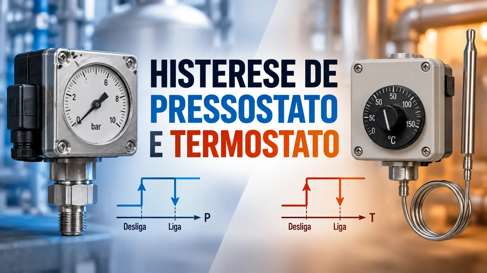

Histerese de pressostato e termostato: setpoint, reset e repetibilidade
Conteúdo técnico: ALOGY Engenharia · Revisado em: 16/09/2026

Em pressostatos e termostatos, o contato normalmente não atua e retorna exatamente no mesmo valor. Essa separação é chamada de histerese, diferencial de comutação ou, em algumas documentações, dead band. A WIKA define esses termos como a diferença entre o ponto de comutação e o ponto de reset.
O detalhe importante é que histerese não deve ser confundida com erro de calibração, repetibilidade ou tolerância do processo. Um equipamento pode ter um diferencial intencional e ainda assim repetir seus pontos de forma consistente.
Quatro conceitos que precisam ser separados
| Conceito | O que representa | Como observar no teste |
|---|---|---|
| Ponto de atuação | Valor em que o contato muda de estado no sentido definido de aproximação. | Registrar variável e estado elétrico no instante da mudança. |
| Ponto de reset | Valor em que o contato retorna ao estado original quando a variável percorre o sentido oposto. | Continuar o ciclo e registrar o retorno sem misturar os sentidos. |
| Histerese | Diferença entre ponto de atuação e ponto de reset. | Calcular a diferença usando a convenção definida no procedimento ou manual. |
| Repetibilidade | Capacidade de repetir o ponto de comutação em ciclos semelhantes. | Executar ciclos sucessivos nas mesmas condições e comparar os pontos obtidos. |
O sentido do teste faz parte do resultado
Um pressostato pode ser configurado para atuar com pressão crescente ou decrescente; um termostato pode ter lógica de atuação em aquecimento ou resfriamento. Por isso, registrar apenas “setpoint = 5 bar” ou “setpoint = 80 °C” é incompleto quando o sentido e a função do contato não são conhecidos.
A documentação de interruptores de temperatura WIKA, por exemplo, define o reset de forma diferente conforme a temperatura está subindo ou descendo. Isso reforça a necessidade de declarar o sentido do teste e o estado normal do contato.
Roteiro prático de verificação
- Identifique o instrumento. Modelo, faixa, unidade, tipo de contato, estado normal e função no processo.
- Confirme a referência. Use o manual do modelo, procedimento e requisito funcional que definem ponto, diferencial e tolerância.
- Defina o sentido de aproximação. Crescente ou decrescente para a atuação, e o caminho inverso para o reset.
- Aplique a variável de forma controlada. Evite variações bruscas que dificultem identificar o ponto real de comutação.
- Registre o ponto de atuação. Anote simultaneamente o valor da variável e a mudança elétrica do contato.
- Ultrapasse o ponto somente o necessário. Depois reverta a direção e registre o ponto de reset.
- Repita o ciclo. Compare os pontos obtidos para avaliar repetibilidade antes de concluir por necessidade de ajuste.
- Registre as-found e as-left quando houver intervenção. Se o equipamento for ajustado, preserve a condição encontrada e repita o ensaio após a alteração.
Exemplo simples de interpretação
Considere um pressostato que atua em 6,0 bar durante a subida e retorna em 5,4 bar durante a descida. O diferencial observado é 0,6 bar. Esse número, sozinho, não diz se o equipamento está aprovado ou reprovado: primeiro é preciso comparar com a faixa de diferencial prevista para aquele modelo e com o requisito funcional da aplicação.
Se em ciclos sucessivos a atuação ocorrer em 6,0; 6,4; 5,7 e 6,3 bar, a investigação deve olhar também para repetibilidade, estabilidade da fonte, velocidade de teste, pulsação, contato elétrico e condição mecânica. Ajustar o parafuso sem entender essa dispersão pode apenas deslocar o problema.
Pressostato mecânico, eletrônico e termostato não são equivalentes
Em dispositivos mecânicos, a histerese pode ser definida pelo mecanismo ou possuir ajuste próprio. Em pressostatos eletrônicos, o usuário frequentemente configura ponto de atuação e reset pela lógica do equipamento. Em termostatos, a relação entre temperatura de comutação e temperatura de reset também depende do projeto e da aplicação.
Por isso, não transfira percentuais ou diferenciais de um modelo para outro. Uma especificação de um pressostato não serve automaticamente para outro fabricante, outra faixa ou um termostato.
Falhas que podem distorcer o resultado
- pulsação de pressão ou temperatura instável próxima do ponto;
- velocidade de aproximação diferente entre ciclos;
- mau contato elétrico, oxidação ou bouncing do contato;
- atrito, desgaste ou folga no mecanismo;
- sensor térmico mal acoplado ou com atraso significativo;
- referência com resolução ou estabilidade inadequada para o diferencial esperado;
- teste feito sem respeitar tempo de estabilização do processo ou do elemento sensor.
Quando a função está ligada à segurança
Verificar um contato local não valida automaticamente uma função inteira de proteção. Intertravamentos podem incluir alimentação, lógica de controle, relés, votação, permissivos, solenóides, atuadores e requisitos de teste adicionais. A própria WIKA diferencia equipamentos destinados a sistemas de segurança por aprovações e características específicas.
Se o pressostato ou termostato participa de uma função instrumentada de segurança, shutdown ou proteção crítica, o procedimento precisa respeitar a documentação do sistema e os critérios definidos para essa função.
Conteúdos relacionados
Referências técnicas
- WIKA Brasil — Perguntas frequentes. Define histerese/diferencial de comutação/faixa morta como a diferença entre o ponto de comutação e o ponto de reset para interruptores de pressão ou temperatura.
- WIKA TS-972 — Operating instructions. Define reset point e switch differential para interruptor de temperatura.
- WIKA PSM02 — Pressostato compacto. Exemplo industrial de pressostato com histerese ajustável e especificação própria de não repetibilidade.
- WIKA PSM-630 — Data sheet. Exemplo de faixas de ponto de comutação, diferencial ajustável e não repetibilidade definidos pelo fabricante.
Perguntas frequentes
Histerese e dead band são a mesma coisa?
Em muitos manuais de pressostatos e termostatos os termos são usados para a diferença entre atuação e reset. Sempre confirme a nomenclatura do fabricante do modelo.
Preciso testar nos dois sentidos?
Sim, quando o objetivo é determinar o diferencial. O ponto de atuação e o ponto de reset pertencem a sentidos opostos do ciclo.
Histerese alta significa defeito?
Não necessariamente. Alguns modelos têm diferencial fixo ou ajustável. Compare o valor observado com a especificação e com o requisito da aplicação.
Um teste de contato valida um intertravamento completo?
Não. Ele verifica apenas o dispositivo dentro do escopo testado. A função completa pode envolver lógica, alimentação e elemento final.
Aviso técnico
Este artigo é educativo. Procedimentos, tolerâncias e decisões de aprovação devem seguir documentação do fabricante, requisito do processo e procedimentos aplicáveis. Em funções críticas ou de segurança, a validação deve considerar a cadeia completa e os requisitos específicos do sistema.